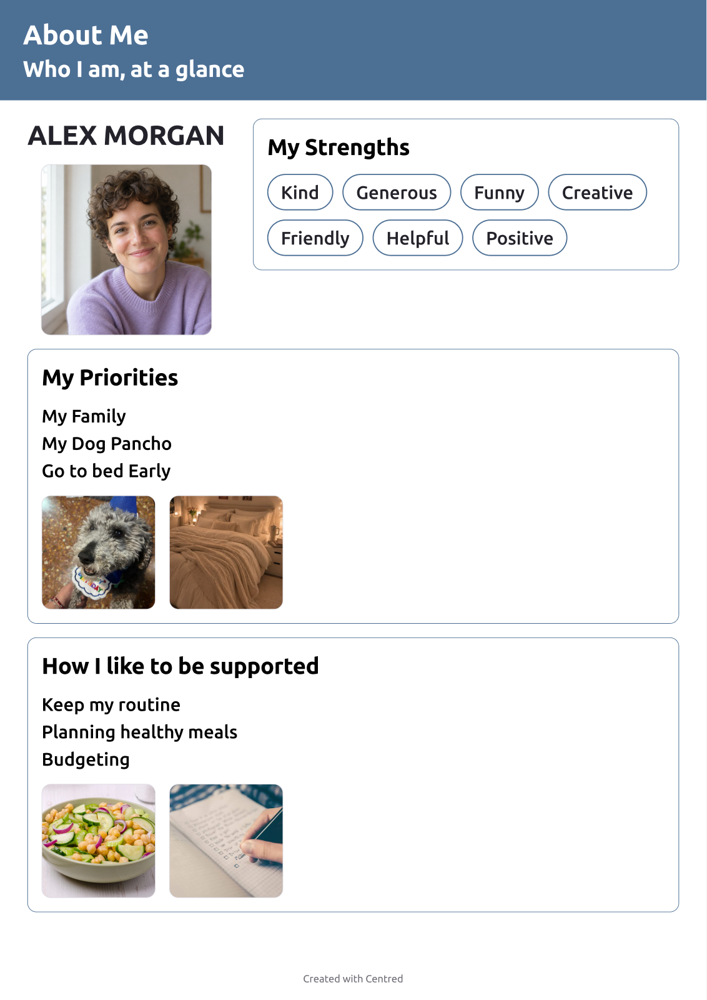
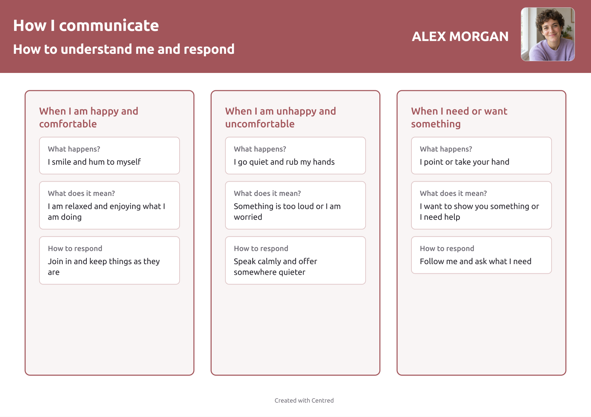
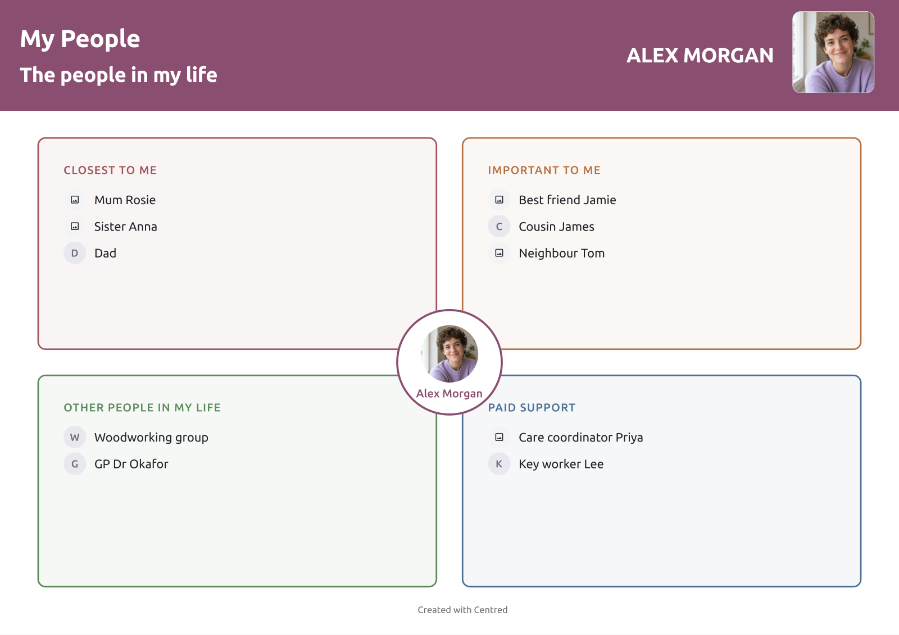

The Idea
Where it started
The idea came from my own work as a person-centred planning facilitator. My colleagues and I kept running into the same problem: there was no good way to share a plan once we'd made it. We drew plans on big sheets of paper, which was fiddly and needed a large wall to work on. But a plan is a working document that can last a year, so a sheet of paper taped to a wall was never going to last. Taking photos didn't solve it either, as each photo only caught part of the plan.
The problem
Person-centred planning tools, such as a one-page profile or a relationship circle, help people describe what matters to them and how they want to be supported. They're used across health, education and social care, but mostly on paper and often with a trained facilitator, so making a plan can mean waiting for a session.
What I set out to make
- A guided app that a support worker, a family member or the person themselves could use without training
- One question at a time, in plain language
- A finished one-page PDF at the end, ready to print or share
- Nothing stored: these are personal details about people who are often vulnerable
Key Decisions
Plain names for the tools
Many of the original tools have formal names, some owned by other organisations, so I renamed each one to say what it does: About Me, My Direction, Good Day / Bad Day, My People, My Perfect Week and How I communicate.
Private by design
There are no accounts and nothing is saved. Answers live only in the app's memory while a tool is open, and the app has no internet access at all. Information only leaves the device when the person chooses to share their PDF. Closing the app always starts a fresh, blank plan.
Prototype first
Before designing the real app, I built a quick web prototype with seven tools to try out the step-by-step flow and the PDF at the end.
The Design
One step at a time
Every tool follows the same pattern: a header that says what this part is about, a progress bar, one question, and Back and Next at the bottom. Where it helps, answers are chips you can tap (Kind, Brave, Patient...) rather than a blank box, with "Add item" for anything else. A calm purple, the Ubuntu typeface and large tap areas keep it friendly and easy to use on a phone or a tablet.
A page worth printing
The PDF is the real product, so I designed each one as a page in its own right. Before sharing, the person sees the actual page and can go back to amend it.



PDFs for About Me, How I communicate and My People (with made-up example data for "Alex Morgan" and an AI-generated photo)
A design system that matches the code
Each Figma component (button, chip, progress bar, question box, person row) has exactly one matching widget in the app, and every colour, size and text style in the code uses the same name as its Figma variable. Changing the design and the code means changing the same thing in two places, not translating between them.
Building It
From Figma to a phone
I designed Centred in Figma and built it in Flutter with the help of an AI coding assistant, which let me turn my designs into a working app myself. I tried every tool on a real phone and tablet before calling it done.
Cutting voice input
I added voice input so people could speak their answers instead of typing. On real devices it was unreliable, working on one and not another. Rather than ship something that would let people down, I removed it. Every answer is now typed or tapped.
Trying it for real
I took Centred on my tablet to a residence for people with learning and physical disabilities, and made plans with the people who live there and the staff who support them. The app is in English and the session was in Spanish, so I translated the questions as we went and typed their answers in Spanish. They liked it as it was and didn't ask for any changes.
The feedback that mattered most came from staff: it's quicker than paper. A plan took about an hour on the tablet, where on paper it usually takes half a day. Funding for support hours is stretched, so every bit of time saved on paperwork is time back with the people they support.
True to the app's design, I kept nothing: the plans belonged to the people who made them, so no PDFs left the session.
Where it is now
In that first session I was the one translating and typing, so it showed the tools work with real people, but not yet whether staff can use the app on their own. The next round is staff and the people they support working in pairs, without me helping. I want to find out three things: how much time it actually saves compared with paper, whether people can use it without a trained facilitator, and whether the plan still sounds like the person, rather than like the staff member answering for them.